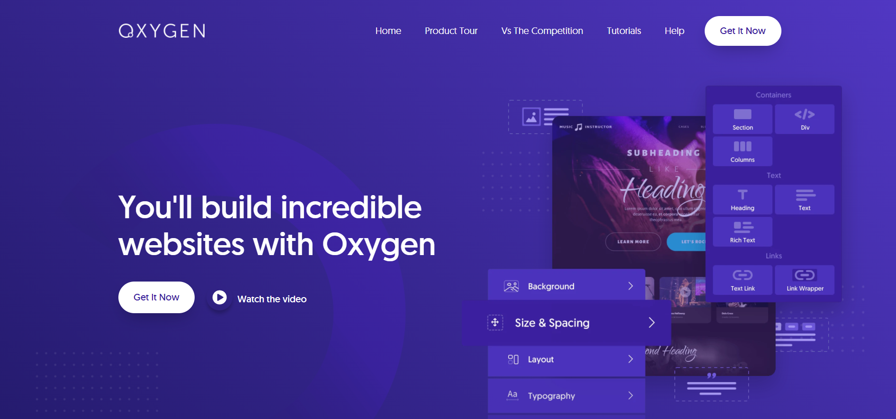

Oxygen
est un constructeur de page lancé en 2016. Il permet de créer des pages de A à Z, du header au footer.
On peut même parler de "site builder" car il désactive la fonctionnalité thème de WordPress.
Il fonctionne grâce à un système de « drag & drop » : il faut faire glisser un élément et le déposer sur la page pour l’intégrer.
Comme Elementor en fait.
En temps réel, on dispose d’un aperçu des éléments ajoutés.
On trouve de nombreux éléments pour construire la page :
bouton, titre, texte, image, call to action, vidéos, etc.
qui s’intègrent dans des sections.
On dispose d'un outil qui précise la structure de la page, chose que l'on ne retrouve pas chez les autres builders.
Oxygen propose des modèles de page si besoin mais par défaut, il n'y a pas de design, c'est à l'utilisateur de tout créer.